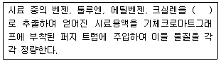
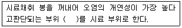
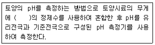
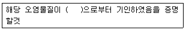
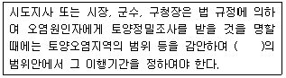
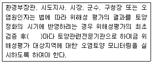

토양환경기사 (2012-03-04 기출문제)
1과목: 토양학개론
1. 토양의 용적비중이 1.17 이고, 입자비중이 2.55 일때 토양의 공극률은?
- 약 41.1%
- 약 45.9%
- 약 51.1%
- 약 54.1%
(정답률: 71%)

2. 토양의 연경도를 나타내는 소성(plasticity)에 관한 설명으로 옳지 않은 것은?
- 토양이 소성을 가지는 최소 수분함량을 소성하한 또는 소성한계라 한다.
- 소성상한과 액성한계의 차이를 소성지수라 한다.
- 액성한계는 소성상태에서 액성상태로 변하는 순간의 수분함량이다.
- 소성은 힘을 가했을 때 물체가 파괴되는 일이 없이 단지 모양만 변화되고 힘을 제거하면 다시 원래의 상태로 돌아가지 않는 성질을 말한다.
(정답률: 72%)
3. NAPL에 관한 설명으로 옳지 않은 것은?
- NAPL이 지하로 유입되면 물과의 무게 차이에 따라 분포 상태와 위치가 달라진다.
- NAPL은 물에 쉽게 용해되어 물과 함께 유체형태로 존재한다.
- NAPL의 이동과 분포에 영향을 미치는 주요 요인은 NAPL의 누출량, 누출의 표면적과 침투면적, 누출 후 경과시간 등이다.
- DNAPL은 TCE, PCE, 1,1,1-TCA 등이다.
(정답률: 73%)
4. 다음 중 일반적 유기오염물질의 주요 특성과 가장 거리가 먼 것은?
- 증기압
- 용해도적
- 분해상수
- 옥탄올/물 분배계수
(정답률: 78%)
5. 대표적인 점토광물인 kaolinite에 관한 설명으로 옳지 않은 것은?
- 규소사면체층과 알루미늄팔면체층이 1:1로 결합된 광물이다.
- 우리나라 토양의 대표적 점토광물이다.
- kaolinite함량이 높은 토양은 통수 및 통기성이 좋다.
- kaolinite 광물에서 동형치환이 주로 일어난다.
(정답률: 83%)
6. 토양의 사막화와 관련된 설명으로 옳지 않은 것은?
- 건조지를 포함한 개발도상국에서 폭발적으로 증가하는 인구압에 대응하기 위한 삼림의 벌목, 관개농업 확대 등 같은 인위적인 요인이 급속한 사막화를 진행 시킨다.
- 사막화를 방지하기 위해서는 식생의 빈약화와 생물 생성 능력의 초기손실을 회피하는 것이 중요하다.
- 토양 표면의 염류와 알칼리류의 급속한 소실로 토양열화가 초래된다.
- 사막화는 특히 건조지 또는 반건조지의 농경지에서 특징적으로 나타나는 토양열화의 문제이다.
(정답률: 83%)
7. 토양에서 일어나는 흡착 모델인 랭그미어(Langmuir) 흡착등온모델의 전제가 되는 가정에 관한 설명으로 옳지 않은 것은?
- 흡착은 흡착지점이 고정된 단일 흡착층에서 일어난다.
- 흡착은 비가역적이다.
- 표면에 흡착된 분자는 옆으로 이동하지 않는다.
- 흡착에너지는 모든 지점에서 동일하다.
(정답률: 75%)
8. 지하수의 비전도도와 전기전도도에 관한 내용으로 옳지 않은 것은?
- 전기전도도는 1개 물질이 전류를 흐르게 하는 능력을 나타내는 단위이다.
- 비전도도는 특정온도하에서 단위길이나 단위단면적을 갖는 물체의 전기전도도를 나타내는 단위이다.
- 지하수내에 이온이 많을수록 전기저항이 감소되고 전기전도도는 증가한다.
- 정확한 의미로 전기전도도는 체적전기전도도와 동의어이며 체적저항의 제곱에 비례한다.
(정답률: 67%)
9. 토양을 분석한 결과 pH 6.0, 점토 95%, 부식 5%로 나타났다. 토양의 CEC를 추정하면 얼마인가?(단, 점토와 부식의 CEC가 각각 10 cmolc/kg, 100cmolc/kg 이라고 가정하며 나머지는 고려하지 않음)
- 12.5 cmolc/kg
- 14.5 cmolc/kg
- 16.5 cmolc/kg
- 18.5 cmolc/kg
(정답률: 72%)
10. 지하수 환경으로 유입된 오염물질이나 용질이 지하수의 공극유속(pore water velocity)과 같은 속도로 움직이는 것을 뜻하는 것은?
- 이류
- 수리분산
- 수리확산
- 평류
(정답률: 80%)
11. 다음의 포화대의 수리지질학적 용어 및 내용에 대한 설명으로 옳지 않은 것은?
- 공극률이란 대수층 내에 발달된 틈 및 공간의 양을 나타내는 것이다.
- 비산출률(specific yield)이란 표면장력으로 인해 중력배수가 되지 않고 공극 내의 지질매체에 부착되어 있는 물의 체적과 전체 체적의 비를 말한다.
- 비보유율(specific retention)은 단위체적의 지하수 저수지와 그 저수지로부터 지하수를 배출시키고 난 다음 대수층 내에 남아 있는 양과의 비를 말한다.
- 공극률은 정량적으로는 대수층으로부터 시료를 채취하여 시료의 전 체적에 대한 시료 내의 전 공간 및 틈의 체적과의 비를 의미한다.
(정답률: 78%)
12. 모래에 지하수를 장기간 중력배수 시켰을 때, 모래의 비산출률이 0.30 이고 모래의 공극률이 0.60 이라면 비보유율은?
- 0.018
- 0.30
- 0.50
- 2.0
(정답률: 78%)
13. 토양수분 중 흡습수에 관한 설명으로 옳지 않은 것은?
- 습도가 높은 대기 중에 토양을 놓아두었을 때 대기로부터 토양에 흡착되는 수분이다.
- pF 4.5 이상이다.
- 결합수와 달리 식물이 직접 흡수 이용할 수 있다.
- 1⑤~110℃에서 8~10시간 건조시키면 제거된다.
(정답률: 83%)
14. 다음의 점토 광물 중 비표면적이 가장 작은 것은?
- Chlorite
- Kaolinite
- Montmorillonite
- Allophane
(정답률: 75%)
15. TPH가. 0.5g/kg으로 오염된 토양 100g 과 1.0g/kg으로 오염된 토양 200g을 혼합하였다. 완전히 혼합된 최종 TPH 농도는? (단, 분해 등 기타 조건은 고려하지 않음)
- 812 mg/kg
- 833 mg/kg
- 856 mg/kg
- 876 mg/kg
(정답률: 63%)
16. 다음 토양오염의 특징에 관한 일반적인 설명 중 옳지 않은 것은?
- 오염의 인지성
- 오염경로의 다양성
- 피해발현의 완만성
- 타 환경인자와의 영향관계의 모호성
(정답률: 75%)
17. 중금속오염으로 인한 대표적인 질병 및 증상과 오염원을 짝지은 것으로 옳지 않은 것은?
- Hg - 미나마타병 - 광산, 제련공장
- As - 피부염증 - 광산 및 제련소
- Pb - 이따이이따이병 - 도금, 피혁제조
- Zn - 피부염 - 도금공장
(정답률: 82%)
18. 토양의 수직단면의 성층 구성 중 무기물층으로서 아직 토양생성작용을 받지 않은 모재층은?
- C층
- E층
- A층
- D층
(정답률: 85%)
19. 포화대의 수리지질학적 특성 중 저유(Storage)특성의 주요인자와 가장 거리가 먼 것은?
- 저유계수(storage coefficient)
- 비저유계수(specific storage coefficient)
- 수리전도도(hydraulic conductivity)
- 비산출률(specific yield)
(정답률: 76%)
20. 질산성 질소(NO3--N)의 농도가 20mg/L라면 NO3-의 농도는?
- 68.6mg/L
- 78.6mg/L
- 88.6mg/L
- 98.6mg/L
(정답률: 59%)
2과목: 토양 및 지하수 오염조사기술
21. 실험을 위한 일반적인 총칙에 관한 내용으로 옳지 않은 것은?
- 연속측정의 목적으로 사용하는 측정기기는 공정시험기준에 의한 측정치와의 정확한 보정을 행한 후 사용할 수 있다.
- 현장측정의 목적으로 사용하는 측정기기는 공정시험기준에 의한 측정치와의 정확한 보정을 행한 후 사용할 수 있다.
- 하나 이상의 시험방법으로 시험한 결과가 서로 달라 제반 기준의 적부 판정에 영향을 줄 경우에는 실험별 정밀도로 판정한다.
- 정량한계는 지정된 시험방법에 따라 시험하였을 경우 그 시험방법에 대한 최소 정량한계를 의미한다.
(정답률: 76%)
22. 기체크로마토그래피로 유기인화합물을 측정할 때 사용되는 정제용 칼럼과 가장 거리가 먼 것은?
- 실리카겔 칼럼
- 플로리실 칼럼
- 활성탄 칼럼
- 폴리아미드 칼럼
(정답률: 71%)
23. 일반지역에서 시안 시험용 시료 채취 지점에 관한 설명으로 옳은 것은?
- 농경지 또는 기타 지역의 구분 없이 대상지역을 대표할 수 있는 1개 지점을 선정한다.
- 농경지 또는 기타 지역의 구분 없이 대상지역을 대표할 수 있는 5~10개 지점을 선정한다.
- 농경지는 지그재그형으로 5~10개 지점을 선정하고 기타 지역은 중심과 주변 4방위 1개 지점씩 총 5개 지점을 선정한다.
- 농경지는 지그재그형으로 5~10개 지점을 선정하고 기타 지역은 중심과 주변 4방위 2개 지점씩 총 9개 지점을 선정한다.
(정답률: 68%)
24. 6가 크롬(자외선/가시선 분광법) 측정에 관한 설명으로 옳은 것은?
- 청색의 착화합물의 흡광도를 540nm에서 측정
- 청색의 착화합물의 흡광도를 460nm에서 측정
- 적자색의 착화합물의 흡광도를 540nm에서 측정
- 적자색의 착화합물의 흡광도를 460nm에서 측정
(정답률: 78%)
25. 다음의 토양오염 위해성 평가 수행 절차 중 가장 먼저 수행하여야 하는 단계는?
- 위해도 결정
- 노출경로 선택
- 위해성 판단 방법
- 정화목표치 계산방법
(정답률: 76%)
26. 벤젠, 톨루엔, 에틸벤젠, 크실렌을 퍼지-트랩 기체크로마토그래피를 적용하여 측정할 때 정량한계는?
- 각 항목별 0.1mg/kg
- 각 항목별 0.5mg/kg
- 각 항목별 1.0mg/kg
- 각 항목별 5.0mg/kg
(정답률: 64%)
27. 다음 중 pH 값이 20℃에서 가장 낮은 값을 나타내는 pH 표준액은?
- 수산화칼슘 표준액
- 프탈산염 표준액
- 인산염 표준액
- 붕산염 표준액
(정답률: 66%)
28. 다음은 벤젠, 톨루엔, 에틸벤젠, 크실렌(퍼지-트랩기체크로마토그래피)측정에 관한 내용이다. ( )안에 옳은 내용은?

- 사염화탄소
- 메틸알코올
- 클로로폼
- 에틸렌글리콜
(정답률: 79%)
29. 다음은 토양오염관리대상시설지역에서 시료의 채취 및 보관에 관한 설명이다. ( )안에 옳은 내용은? (단, 봉이 들어있는 타격식, 나선식 토양시추장비 기준)

- ± 5cm
- ± 10cm
- ± 15cm
- ± 30cm
(정답률: 83%)
30. 저장물질이 있는 누출검사 대상시설-기상부의 시험법인 미가압법 측정방법에 관한 설명으로 옳지 않은 것은?
- 가압 후 15분 이상 유지시간을 두어 안정시키고 그 이후 15분 동안의 압력강하를 측정한다.
- 가압 중에 노출되어 있는 배관접속부 등에 비눗물 등을 뿌려 누출여부를 확인하여야 한다.
- 가압속도는 누출검사대상시설 공간용적 1m3 당 1분 이상이 되도록 가압시간을 조정한다.
- 누출검사대상시설내 기상부 높이가 200mm 이상인가를 확인한 후 가압한다.
(정답률: 72%)
31. 총칙의 내용 중 온도에 관한 설명으로 옳지 않은 것은?
- 열수는 약 100℃
- 냉수는 15℃ 이하
- 온수는 50~60℃
- 찬 곳은 따로 규정이 없는 한 0~15℃
(정답률: 79%)
32. 정량한계와 표준편차의 관계로 옳은 것은?
- 정량한계= 3 × 표준편차
- 정량한계= 3.3 × 표준편차
- 정량한계= 5 × 표준편차
- 정량한계= 10 × 표준편차
(정답률: 84%)
33. 토양정밀조사 단계인 기초조사 방법과 가장 거리가 먼 것은?
- 자료조사
- 설문조사
- 청취조사
- 현장조사
(정답률: 70%)
34. 다음은 유리전극법을 사용한 수소이온농도 측정에 관한 설명이다. ( )안에 내용으로 옳은 것은?

- 3배
- 5배
- 10배
- 20배
(정답률: 71%)
35. 유기인화합물을 기체크로마토그래피로 측정할 때 정밀도(% RSD) 기준에 대한 설명으로 옳은 것은?(단, 정도보증/정도관리에 따라 산정)
- 정밀도는 측정값의 상재표준편차로 산출하여 그 값이 ±5% 이내 이어야 한다.
- 정밀도는 측정값의 상재표준편차로 산출하여 그 값이 ±10% 이내 이어야 한다.
- 정밀도는 측정값의 상재표준편차로 산출하여 그 값이 ±20% 이내 이어야 한다.
- 정밀도는 측정값의 상재표준편차로 산출하여 그 값이 ±30% 이내 이어야 한다.
(정답률: 72%)
36. 조제한 pH 표준액은 경질 유리병 또는 폴리에틸렌병에 보관한다. 보통 산성 표준액은 몇 개월 이내에 사용해야 하는가?
- 1개월
- 2개월
- 3개월
- 6개월
(정답률: 57%)
37. 기체크로마토그래피를 적용하여 석유계총탄화수소를 측정할 때 정량한계는?(오류 신고가 접수된 문제입니다. 반드시 정답과 해설을 확인하시기 바랍니다.)
- 석유계총탄화수소로 1.0mg/kg
- 석유계총탄화수소로 3.0mg/kg
- 석유계총탄화수소로 5.0mg/kg
- 석유계총탄화수소로 10.0mg/kg
(정답률: 63%)
38. 다음 중 기체크로마토그래피로 PCB를 측정할 때 주로 사용하는 검출기는?
- 전자포착검출기(Electron Capture Detector, ECD)
- 불꽃이온화검출기(Flame Ionization Detector, FID)
- 광이온화검출기(Photo Ionization Detector, PID)
- 열전도도검출기(Thermal Conductivity Detector, TCD)
(정답률: 75%)
39. 토양 중 수분함량 측정에 관한 설명으로 옳지 않은 것은?
- 토양 중 수분을 0.1%까지 측정한다.
- 돌, 나무 등 눈에 보이는 협잡물 등은 제거한 후 시험해야 한다.
- 시료를 1⑤~110℃의 건조기 안에서 4시간 이상 함량이 될 때 까지 건조한다.
- 채취된 시료는 8시간 이내에 증발 처리하여야 한다.
(정답률: 75%)
40. 수소이온농도 분석을 위한 시료를 조제할 때 사용되는 표준체는?
- 눈금간격 5 mm의 표준체(5 메쉬)
- 눈금간격 2 mm의 표준체(10 메쉬)
- 눈금간격 1 mm의 표준체(100 메쉬)
- 눈금간격 0.5mm의 표준체(200 메쉬)
(정답률: 61%)
3과목: 토양 및 지하수 오염정화 기술
41. 전기 동력학적 오염토양 복원기술이 타 기술과 비교하여 갖는 장점으로 옳지 않은 것은?
- 전기장의 방향으로 조절함으로써 토양 내 공극유체와 오염물질들의 이동방향을 조절할 수 있다.
- 물의 전기분해 반응에 의해 전기전도도가 증가하여 전기효율이 증가되어 진다.
- 굴착 등이 필요하지 않기 때문에 현재의 현장상태를 유지하면서 오염토양을 복원할 수 있다.
- 전기삼투계수가 토양의 종류에 크게 영향을 받지 않기 때문에 여러 종류의 토양층으로 구성된 이질성이 큰 토양에서도 오염물질의 제거가 비교적 균일하다.
(정답률: 52%)
42. 독립영양미생물(화학합성 자가영양)의 탄소원-에너지원으로 옳은 것은?
- 유기탄소 - 유기물의 산화환원반응
- 유기탄소 - 빛
- 이산화탄소 - 무기물의 산화환원반응
- 이산화탄소 - 빛
(정답률: 63%)
43. 오염된 지하수를 정화하기 위해 포화대 내에 공기를 주입하여 지하수를 폭기 시킴으로써 휘발성 유기화합물질을 휘발시켜 제거하는 원위치 기술은?
- 에어스파징(air sparging)
- 에어위싱(air washing)
- 에어벤팅(air venting)
- 에어스트리핑(air stripping)
(정답률: 67%)
44. 식물정화에 중요한 역할을 하는 효소에 대해 잘못 짝지어진 것은?
- nitroreductase - RDX 분해
- dehalogenase - TCE 분해
- peroxidase - 제초제 분해
- laccase - 탄약폐기물 분해
(정답률: 62%)
45. 저온 열탈착법(Low Temperature Thermal Desorption)의 장, 단점으로 옳지 않은 것은?
- 처리효율이 높고 단기간에 처리가 가능하다.
- 카드뮴이나 수은 등을 비롯한 거의 모든 중금속 정화에 효과가 탁월하다.
- 다른 정화기술에 비해 높은 에너지 비용이 소요되어 경제성이 낮다.
- 수분함량이 높거나 점토 및 휴믹산 등을 높게 함유한 토양의 경우 반응신간이 길어지고 처리비용이 증가한다.
(정답률: 59%)
46. 유기화학물질의 생분해능은 화합물의 분자구조에 크게 의존한다. 다음 조건 중 대상 오염물질이 일반적으로 난분해성 경향을 갖게 하는 조건이 아닌 것은?
- 분자내에 많은 수의 할로겐원소를 함유하는 화합물
- 가지구조가 많은 화합물
- 물에 대한 용해도가 낮은 화합물
- 원자의 전하차가 작은 화합물
(정답률: 72%)
47. 지하수면 아래 대수층이 TCE 오염운에 의해 오염 되었다. 오염 대수층의 체적은 20000 m3 이고 매질의 공극률이 0.3 이며, 오염운 내 지하수의 평균 TCE 농도가 1.0mg/L 이라면, 오염운의 지하수내 존재하는 TCE 총량은?
- 2.0 kg
- 3.0 kg
- 4.0 kg
- 6.0 kg
(정답률: 55%)
48. 벤젠 40kg으로 오염된 토양을 원위치 생물학적 복원기술에 의해 정화하고자 한다. 다음의 조건에 의해 벤젠이 완전 분해되는데 필요한 산소를 과산화수소로 공급한다면 필요한 과산화수소의 양(kg)은? (단, 벤젠 C6H6, 과산화수소 H2O2, 2H2O2 → 2H2O + O2 )
- 143
- 184
- 226
- 262
(정답률: 57%)
49. 계면활성제를 사용한 세정공정으로 TCE로 오염된 토양을 처리하고자 한다. 오염토양 내 TCE 1 kg을 모두 용해시키기 위해 필요한 계면활성제를 10L/hr 유량으로 공급할 경우 공급시간은? (단, 계면활성제 내 TCE 용해도 4g/L)
- 5 hr
- 10 hr
- 25 hr
- 50 hr
(정답률: 42%)
50. 다음 토양세척장치 종류 중 교반 세척방식에 해당되는 장치의 형태는?
- 진동체형
- 유동상형
- 회전드럼형
- 스크루형
(정답률: 71%)
51. 다음과 같이 바이오벤팅(bioventing) 기술을 적용할 때, 평균산소 소모율(%O2/day)은? (단, 주입공기량 100m3/day, 초기산소농도 21%, 배기가스 중의 산소농도 3%, 토양체적 1000m3, 토양공극율 0.2)
- 3
- 4
- 6
- 9
(정답률: 46%)
52. 투수성 반응벽체(PRB)의 공정원리에 관한 설명으로 옳지 않은 것은?
- PRB은 원위치 오염방지 구조물이다.
- PRB는 오염지역 밖으로 지하수의 이동을 막는 것이므로 비용측면에서 효과적이다.
- PRB는 산성광산폐수에서 방사성동위원소까지 오염된 지하수에 포괄적으로 적용된다.
- PRB는 지중의 반응존(reactive zone)으로 오염물을 이동시키는 자연적인 지하수 흐름에 의존한다.
(정답률: 50%)
53. 동전기정화기술에서 포화된 지중 내에 전극을 삽입하고 직류 전원을 연결하였을 때 양극(+)에서 발생되는 반응식으로 가장 옳은 것은?
- 2H2O + 2e- → H2↑ + 2OH-
- 2H2O - 4e- → O2↑ + 4H+
- 2H2O - 4e- → H2↑ + 4H+
- 2H2O + 2e- → 02↑ + 2OH-
(정답률: 62%)
54. 토양증기추출과 비교한 Bioventing의 장단점으로 옳지 않은 것은?
- 추가적인 영양염류의 공급이 필요
- 장치가 간단하고 설치가 용이함
- 배출가스 처리의 추가비용 필요
- 적용부지의 범위가 넓음
(정답률: 55%)
55. 토양오염을 Air Sparging 방법을 적용하여 처리할 때 영향을 주는 인자의 유리한 조건으로 옳지 않은 것은?
- 대수층종류 : 피압 대수층
- 오염물질의 호기성 생분해능 : 높음
- 오염물질의 헨리상수(atmㆍm3/mol) : 10-5 이상
- 오염물질의 용해도 : 낮음
(정답률: 62%)
56. 지하수 내 벤젠의 농도가 50 mg/L 이다. 일차 감쇠상수(first-order decay rate)가 0.0⑤/day 일 때 3년 후 지하수 내 벤젠의 농도(mg/L)는?
- 0.18
- 0.21
- 0.35
- 0.42
(정답률: 58%)
57. 투수성 반응벽의 처리매체에 관한 내용으로 옳지 않은 것은?
- 석회는 산성 지하수를 중성화할 필요성이 있는 경우에 사용될 수 있다.
- 석회는 카드뮴, 철, 크롬 금속을 제거하는 데에는 효과적이지 못하다.
- 제오라이트와 합성이온교환수지는 수명이 짧고 고가이며 재활성화 하는데 문제가 있어 경제적인 면에서 적용성이 적다.
- 활성탄은 유기물질로 오염된 지하수를 제어하는데 사용될 수 있다.
(정답률: 59%)
58. 벤젠의 농도가 12.0 mg/L 인 지하수에서 미생물의 호기성 분해에 의하여 분해가 일어나고 있다. 이 대수층의 산소농도가 6.0 mg/L 이며 산소 소비율이 (3mg/L-O2)/(1mg/L-벤젠)인 경우 분해 후 최종 벤젠농도(mg/L)는? (단, 다른 곳으로 부터의 산소공급은 없다고 가정)
- 10
- 5
- 8.4
- 2
(정답률: 41%)
59. 유기오염 물질의 휘발성이 낮아지는 순서로 나열된 것은?(단, 휘발성 높음 ＞ 휘발성 낮음)
- PCB ＞ 석유탄화수소 ＞ PAH
- 휘발성 염화유기용매 ＞ PCB ＞ BTEX
- PAH ＞ BTEX ＞ PCB
- BTEX ＞ 석유탄화수소 ＞ PCB
(정답률: 70%)
60. 토양 정화를 위한 화학적 산화법의 장단점으로 옳지 않은 것은?
- 오염물질을 원위치에서 정화할 수 있음
- 화학적 산화법 적용 후, 기간 경과에 따른 오염물질 용존농도의 재증가가 없음
- 투수성이 낮은 토양에서는 오염물질과 산화제의 접속이 쉽지 않음
- 용존 오염물질의 오염운의 모양이 화학적 산화법의 적용을 통하여 변할 수 있음
(정답률: 64%)
4과목: 토양 및 지하수 환경관계법규
61. 다음 중 토양오염검사수수료가 가장 비싼 검사항목은?
- 불소
- 비소
- 수은
- 유기인
(정답률: 65%)
62. 토양보전대책지역 지정표지판에 관한 설명과 가장 거리가 먼 것은?
- 표지판의 규격은 가로 3미처, 세로 2미터, 높이 1.5미터 이상으로 하여야 한다.
- 표지판은 흰색 바탕에 청색 글씨로 지워지지 아니하도록 하여야 한다.
- 표지판에는 지정목적, 지정일자, 토양보전대책지역안에서 제한되는 행위, 토양보전대책지역 내역(주소, 면적, 약도)이 포함되어 있어야 한다.
- 표지판은 사방에서 잘 보이는 곳에 견고하게 설치하여야 한다.
(정답률: 67%)
63. 지하수를 생활용수로 이용하는 경우 일반오염불질에 대한 지하수 수질기준으로 옳지 않은 것은?
- 수소이온농도(pH) : 5.8~8.5
- 총대장균군 : 5000 이하(군수/100mL)
- 질산성질소 : 20mg/L 이하
- 염소이온 : 200mg/L 이하
(정답률: 43%)
64. 환경부장관이 토양관리단지 조성계획을 수립할 때 포함되어야 하는 사항과 가장 거리가 먼 것은?
- 정화된 토양의 재활용 및 보급에 관한 사항
- 오염토양 정화 계획
- 환경보전계획
- 교통시설 등 주요기반시설 설치 및 운영계획
(정답률: 46%)
65. 토양관련전문기관인 토양오염조사기관의 지정기준(기술인력 비고 내용)으로 옳지 않은 것은?
- 박사는 해당 분야 기사 자격취득 후 토양관련 분야 또는 해당 전문기술 분야에 5년 이상 종사한 사람으로 대체할 수 있다.
- 기술사는 해당 분야 기사 자격취득 후 토양관련 분야 또는 해당 전문기술 분야에서 5년 이상 종사한 사람으로 대체할 수 있다.
- 기사는 해당 분야 산업기사 자격취득 후 토양 관련분야 또는 해당 전문기술 분야에서 3년 이상 종사한 사람으로 대체할 수 있다.
- 산업기사는 고등교육법에 따른 학교의 해당분야를 졸업하고 토양 관련분야 또는 해당 전문기술 분야에서 3년 이상 종사한 사람이나 환경부장관이 인정하는 토양 지하수전문인력 양성 교육과정을 수료한 사람으로 대체할 수 있다.
(정답률: 63%)
66. 특정토양오염관리대상시설에 대하여 변경신고를 하여야 하는 경우와 가장 거리가 먼 것은?
- 사업장의 명칭이 변경되는 경우
- 대표자가 변경되는 경우
- 사업장의 위치가 변경되는 경우
- 특정토양오염관리대상시설에 저장하는 오염물질을 변경하는 경우
(정답률: 60%)
67. 토양오염대책기준으로 옳지 않는 것은?(단, 1지역 기준)
- 구리 : 450mg/kg
- 납 : 600mg/kg
- 아연 : 900mg/kg
- 불소 : 300mg/kg
(정답률: 28%)
68. 기술인력에 대한 교육과정으로 옳은 것은?(단, 보수 교육 기준)
- 신규교육을 받은 날을 기준으로 3년 마다 8시간
- 신규교육을 받은 날을 기준으로 3년 마다 24시간
- 신규교육을 받은 날을 기준으로 5년 마다 8시간
- 신규교육을 받은 날을 기준으로 5년 마다 24시간
(정답률: 65%)
69. 토양환경보전법 용어의 정의로 옳지 않은 것은?
- 토양오염물질 : 토양오염의 원인이 되는 물질로서 환경부령으로 정하는 것을 말한다.
- 특정토양오염관리대상시설 : 토양을 현저하게 오염시킬 우려가 있는 토양오염관리대상시설로서 환경부령으로 정하는 것을 말한다.
- 토양오염 : 사업활동이나 그 밖의 사람의 활동에 의하여 토양이 오염되는 것으로서 사람의 건강, 재산이나 환경에 피해를 주는 상태를 말한다.
- 토양처리업 : 토양을 적절한 방법으로 정화 처리하는 업을 말한다.
(정답률: 71%)
70. 오염토양을 버리거나 매립한 자에 대한 벌칙 기준은?
- 6월 이하의 징역 또는 5백만원 이하의 벌금
- 1년 이하의 징역 또는 5백만원 이하의 벌금
- 2년 이하의 징역 또는 1천만원 이하의 벌금
- 3년 이하의 징역 또는 2천만원 이하의 벌금
(정답률: 39%)
71. 다음은 자연적인 원인에 의한 토양오염임을 입증 하는 대통령령으로 정하는 방법이다. ( )안에 내용으로 옳은 것은?

- 대상 지역의 변성
- 대상 지역의 기후변동
- 대상 부지의 지각변동
- 대상 부지의 기반암
(정답률: 64%)
72. 오염원인자는 토양오염조사기관으로 하여금 오염 토양의 정화과정 및 정화완료에 대한 검증을 하게 할 때에는 환경부령으로 정하는 내용 및 절차에 따라 오염토양 정화계획을 작성하여 관할 특별자치도지사, 시장, 군수, 구청장에게 제출하여야 한다. 제출한 계획 중 [환경부령으로 정하는 사항]을 변경할 때에도 또한 같다. 위 내용 중 환경부령으로 정하는 사항으로 옳지 않은 것은?
- 오염토양의 양 또는 오염범위(20% 이상 증감하는 경우만 해당한다)
- 토양오염물질의 오염정도(30% 이상 증감하는 경우만 해당한다)
- 토양오염물질 종류
- 정화방법, 정화소요시간, 토양정화업자 또는 검증 할 토양관련전문기관
(정답률: 48%)
73. 토양관련전문기관 중 토양오염조사기관의 업무와 가장 거리가 먼 것은?
- 토양정밀조사
- 토양 위해성평가
- 오염토양 개선사업의 지도, 감독
- 토양오염도 검사
(정답률: 48%)
74. 다음 토양정밀 조사명령에 관한 내용이다. ( )안에 내용으로 옳은 것은?

- 1월
- 2월
- 3월
- 6월
(정답률: 60%)
75. 지하수를 공업용수로 이용하는 경우 특정유해물질에 대한 지하수 수질기준으로 옳지 않는 것은?
- 카드뮴 : 0.02 mg/L 이하
- 비소 : 0.01 mg/L 이하
- 시안 : 0.2 mg/L 이하
- 수은 : 0.001 mg/L 이하
(정답률: 38%)
76. 측정망설치계획에 포함되어야 하는 사항과 가장 거리가 먼 것은?
- 측정망 설치시기
- 측정망 배치도
- 측정대상 오염물질
- 측정지점의 위치 및 면적
(정답률: 61%)
77. 다음 오염물질 중 토양오염우려기준이 나머지와 다른 것은? (단, 1지역 기준)
- 카드뮴
- 비소
- 수은
- 페놀
(정답률: 38%)
78. 오염토양개선사업의 종류와 가장 거리가 먼 것은?
- 오염수변 지역 정화사업
- 오염토양의 위생적 매립, 정화사업
- 객토 및 토양개량제의 사용 등 농토배양사업
- 오염물질의 흡수력이 강한 식물식재사업
(정답률: 59%)
79. 환경부장관, 시도지사, 시장, 군수, 구청장 또는 토양관련전문기관은 상시측정, 토양오염실태조사, 토양정밀조사, 표토의 침식 현황 및 정도에 대한 조사와 위해성평가를 위해 소속 공무원 또는 직원으로 하여금 타인의 토지에 출입하여 그 토에 있는 나무, 돌, 흙이나 그 밖의 장애물을 변경 또는 제거하게 할 수 있다. 이 경우 토양관련전문기관의 장은 특별자치도지사, 시장, 군수, 구청장의 허가를 받아야 한다. 토지 점유자는 적당한 사유 없이 관계 공무원 및 토양관련전문기관 직원의 행위를 방해하거나 거절하지 못한다. 이를 위반하여 정당한 사유 없이 관계 공무원 또는 토양관련전문기관의 직원의 행위를 방해 또는 거절한 자에 대한 과태료 기준?
- 100만원 이하
- 200만원 이하
- 300만원 이하
- 500만원 이하
(정답률: 46%)
80. 다음은 위해성평가 대상지역의 관리에 관한 내용이다. ( )안에 옳은 내용은?

- 1년
- 2년
- 3년
- 5년
(정답률: 29%)